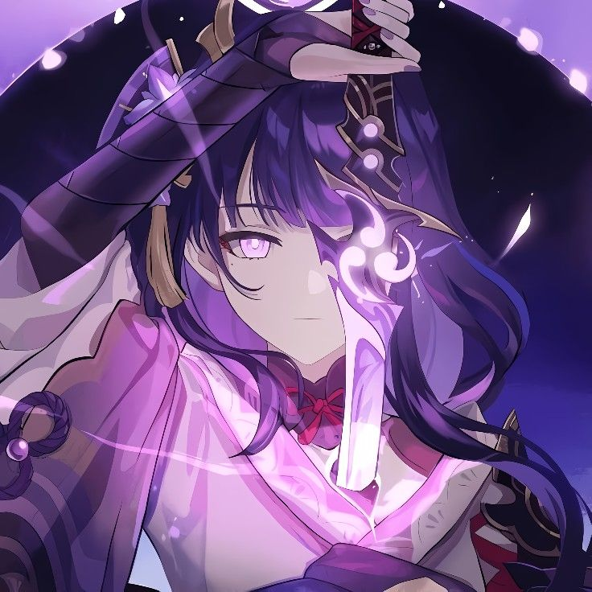
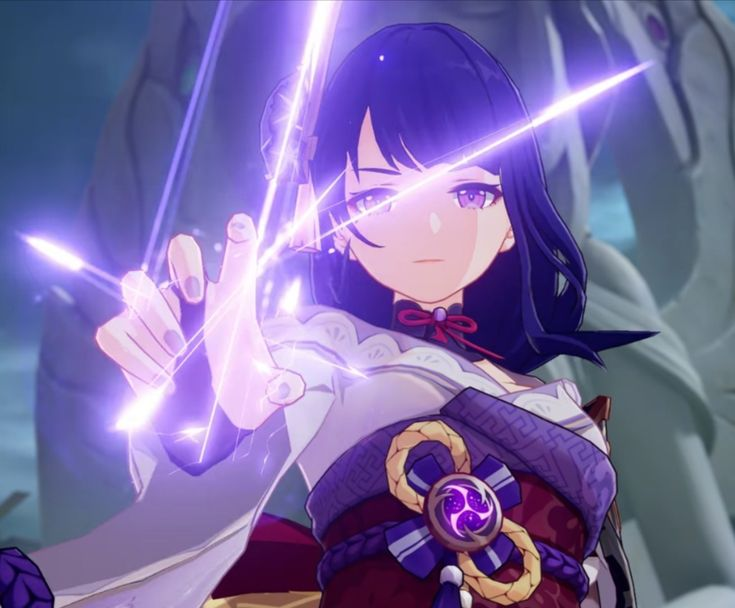
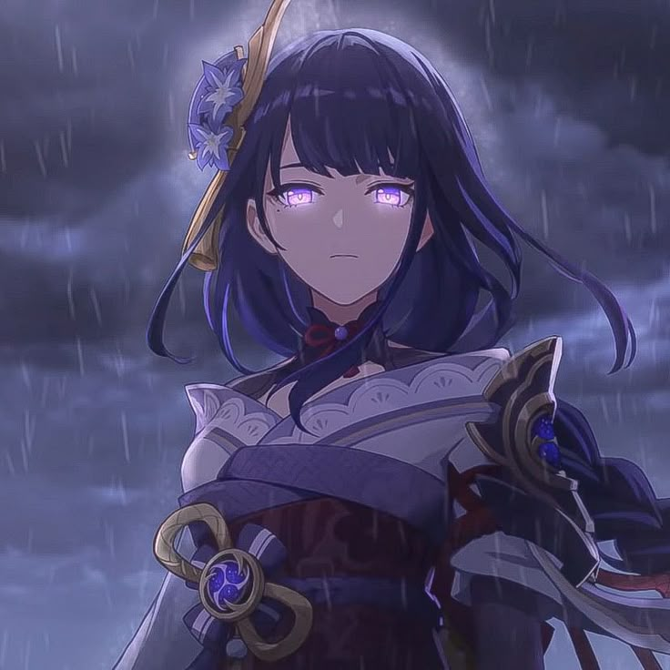
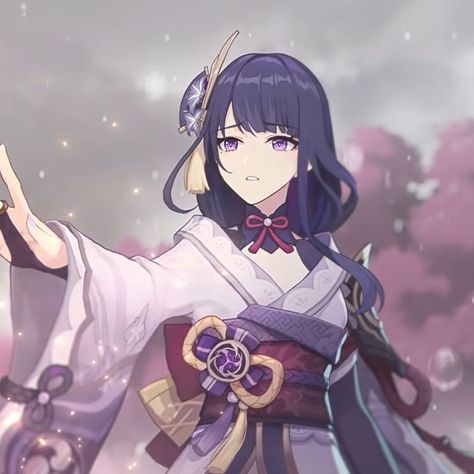
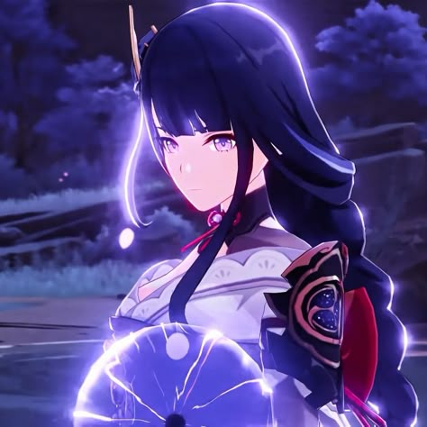

Biografía
- Nombre real: Raiden Ei
- Alias: Shogun Raiden, El Electro Archon, El Eterno, Dios de la Eternidad
- Región: Inazuma
- Elemento: Electro ⚡
- Arma: Lanza (Polearm)
- Afiliación: Inazuma Shogunate
Raiden Ei es el actual Electro Archon y gobernante de Inazuma. A diferencia de otros arcontes que gobiernan directamente, Ei creó una marioneta llamada Shogun Raiden para gobernar mientras ella meditaba en el Plano de la Eutimia, buscando la eternidad.
Tras perder a su hermana Makoto (la anterior Electro Archon) durante la Catástrofe de Khaenri'ah, Ei quedó marcada por el dolor y decidió eliminar todos los cambios para mantener la eternidad, lo que llevó a políticas rígidas como el Decreto de Caza de Visiones. Su historia está profundamente conectada con la lucha interna entre el cambio y la constancia.
Habilidades
- Habilidad Elemental – Trascendencia: Presencia Maligna (Elemental Skill) Invoca el Ojo de la Tormenta que otorga bonificaciones de daño y aplica daño Electro coordinado cada vez que un personaje del equipo ataca.
- Habilidad Definitiva – Secreto de los Sueños de los Raigeki (Burst / Ultimate) Raiden desata su Musou no Hitotachi, empuñando su espada Electro en un corte devastador. Esta habilidad se ve potenciada por la Energía acumulada mediante el uso de habilidades definitivas de otros personajes. Después, permanece en combate con ataques normales, cargados e imbuidos de Electro.
- Talentos Pasivos: Deseo Iluminador: Mejora el Burst de aliados con base en su energía usada. Iluminación Infinita: Otorga recarga de energía a aliados. Deseo No Expresado: Reduce el costo de mora al subir talentos.
Galería Principal





Curiosidades
- 🔥 Inspiración japonesa: Su diseño y personalidad están basados en el concepto del shogunato japonés y la diosa sintoísta del rayo.
- ⚔️ Musou no Hitotachi es uno de los ataques más icónicos de todo el juego, visualmente impresionante y de alto daño.
- 🧘♀️ Aunque la vemos como una diosa rígida, Ei en realidad lucha internamente con emociones humanas como la pérdida, la nostalgia y el miedo al cambio.
- 🍡 Ama los dulces, especialmente el dango, y suele escaparse en secreto para probar postres.
- 💡 Su historia en los Archon Quests y su Hangout personal muestran un cambio de visión, pasando de la "eternidad inmutable" a aceptar el cambio como parte de la evolución.
- 🎭 Doble personalidad mecánica: la verdadera Ei (la diosa) y la marioneta Shogun, con quien incluso llega a pelear en un punto de la historia.
- 📜 Su hermana, Makoto (Raiden Makoto), fue la verdadera Electro Archon original, pero Ei asumió el título tras su muerte.